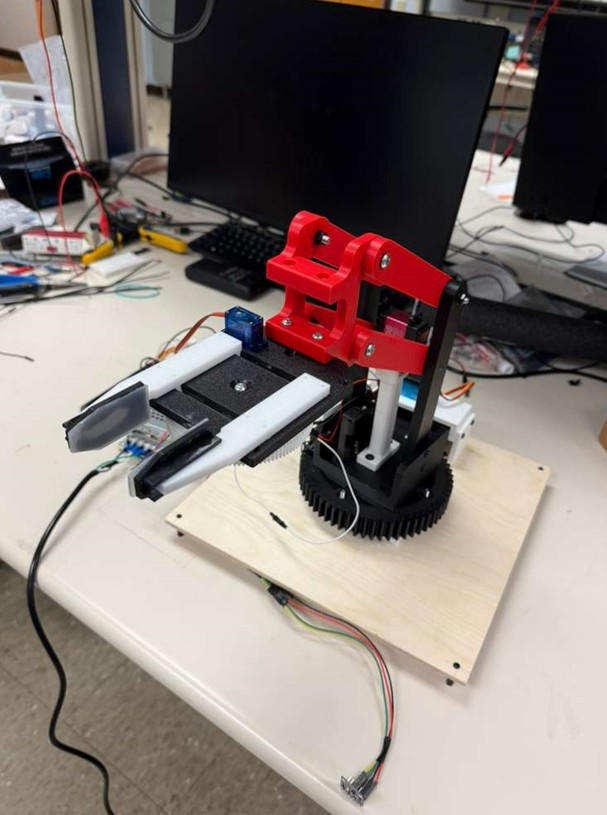
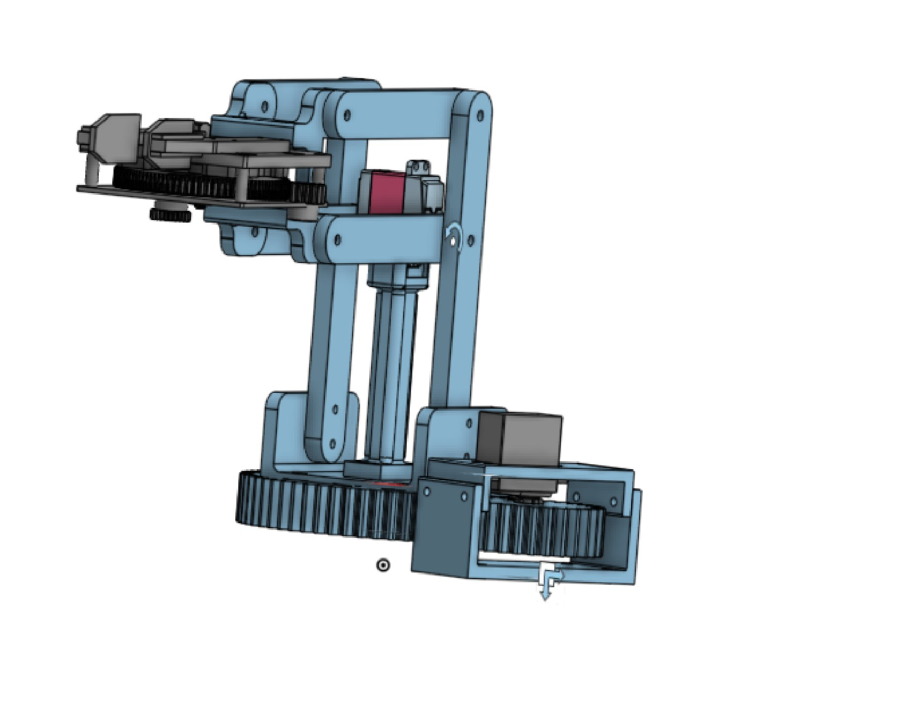
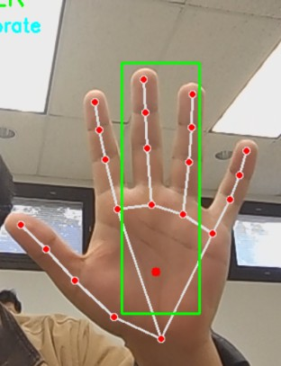
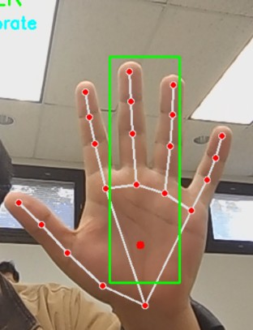

Automated Pick-and-Place Robotic Arm (Team of 4)
Built a small-scale pick-and-place robot to detect parts and execute repeatable motion cycles.
- Built a 3-DOF robotic arm with a rotating base and four-bar linkage for repeatable pick-and-place motion.
- Integrated color sensors to detect parts and trigger automated motion.
- Modeled linkage motion, reach, and workspace constraints in SolidWorks and OnShape prior to fabrication.
- Implemented servo-based actuation and planned fabrication using 3D-printed components.


 
